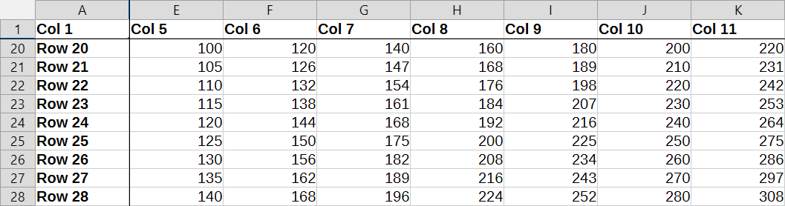
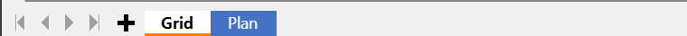

Panes, the view and tab colours
Freezing and splitting
LibreOffice's View ▸ Freeze Cells keeps rows and columns in place while the rest scrolls:
using OpenDocumentSpreadsheets
xf = newods("Grid")
sh = xf["Grid"]
for r in 1:40, c in 1:12
sh[r, c] = r == 1 ? "Col $c" : c == 1 ? "Row $r" : r * c
end
setFont(sh, 1, :; bold = true)
setFont(sh, :, 1; bold = true)
freezePanes(sh; nrows = 1, ncols = 1) # or freezePanes(sh, "B2")
setSheetView(sh; topLeftCell = "E20") # scrolled down and right
splitPanes(sh; nrows = 10) # a split that doesn't freeze
removePanes(sh)LibreOffice keeps a split's position in screen pixels, so a split after row 10 falls exactly at the edge of row 10 on a 96-dpi screen at 100% zoom, and near it otherwise.
The view
setSheetView sets how a sheet looks when LibreOffice opens it: its zoom, gridlines, cursor and the cell at its top left.
setSheetView(sh; zoom = 125, showGridLines = false, activeCell = "C3", topLeftCell = "A1")
OpenDocumentSpreadsheets.getSheetView(sh)The view is saved with the file, as LibreOffice saves it:
- Some settings are the whole file's: row and column headers, zero values and the page-break preview.
- The zoom runs from 20% to 600%.
- A selection is kept as its cursor only (
activeCell, or the first cell ofselection).
Tab colours and hidden sheets
addsheet!(xf, "Plan"); addsheet!(xf, "Notes")
setTabColor(sh, "FF8000") # or a colour name: "orange"
setTabColor(xf["Plan"], "4472C4")
setSheetVisibility(xf["Notes"], :hidden)
removeTabColor(sh)
setSheetVisibility(xf["Notes"], :visible)Tab colours are hex ("FF8000") or colour names. The last visible sheet can't be hidden.
Not available
Calc can't store these, so asking for one is an error that says why: the page layout view (view = :pageLayout), and theme colours for tabs.